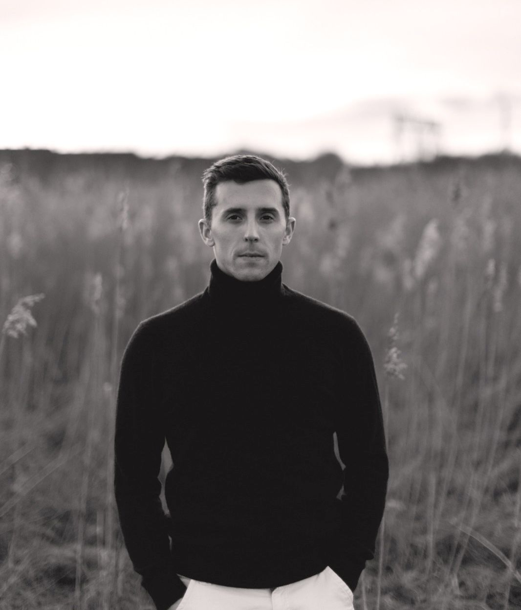
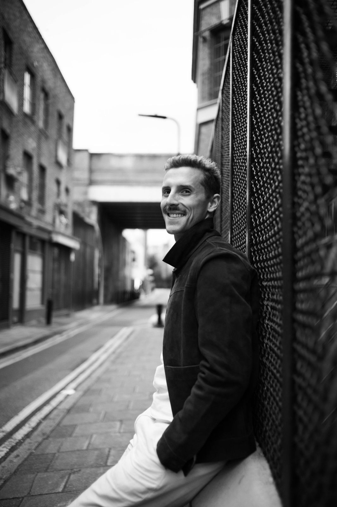
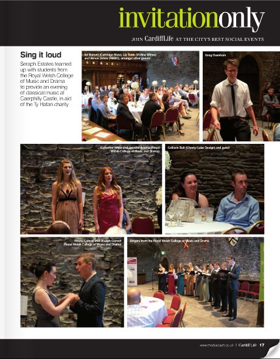
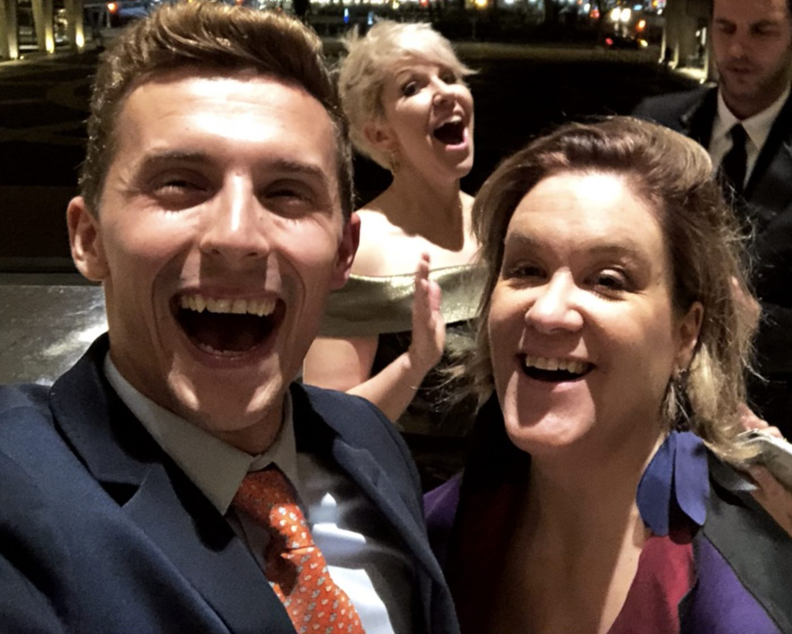
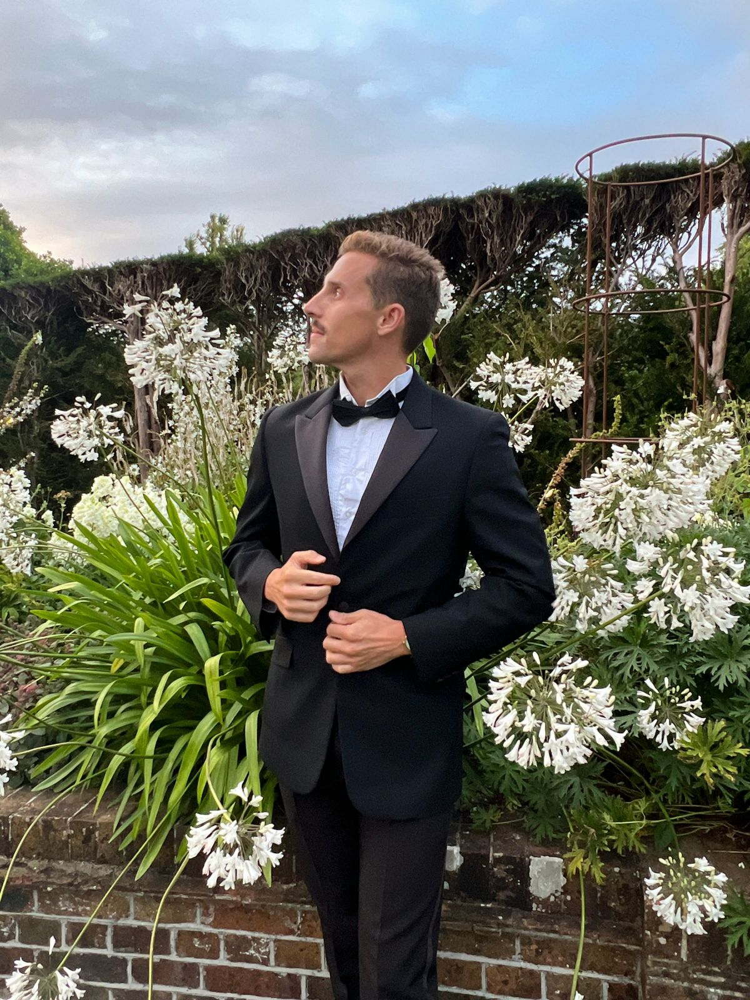
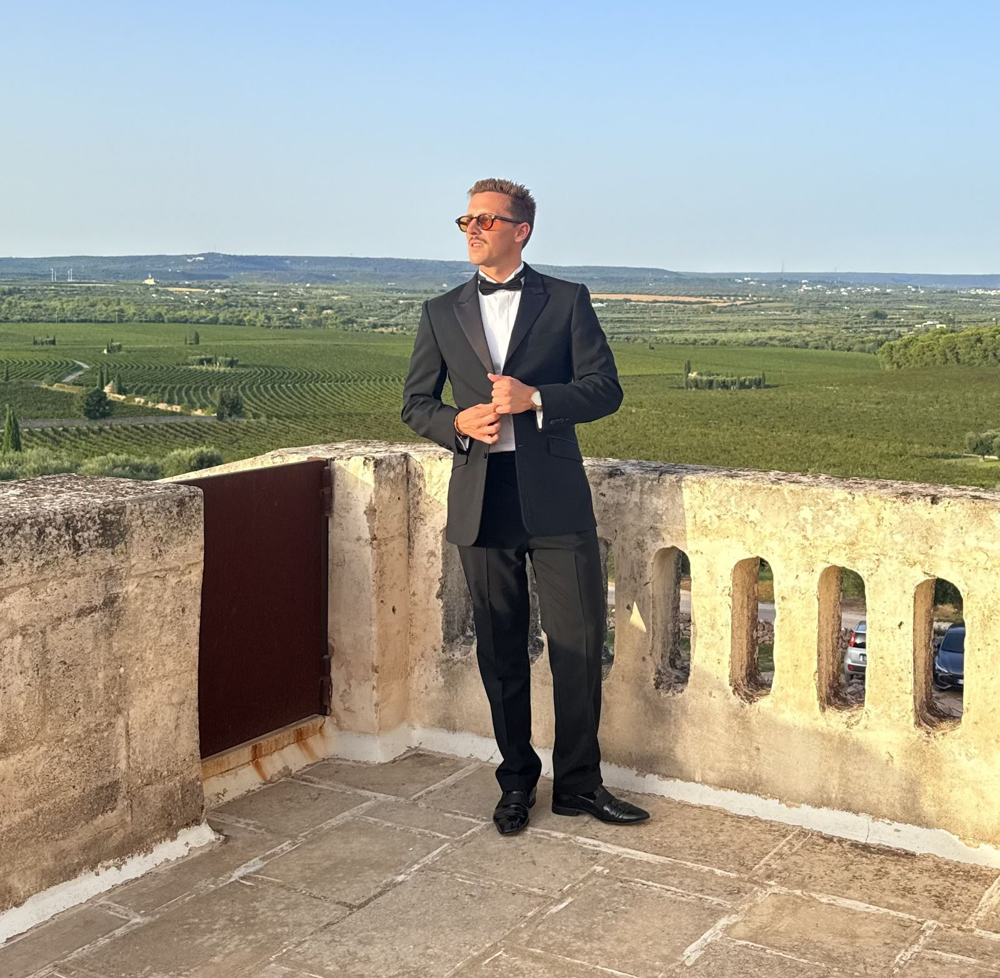
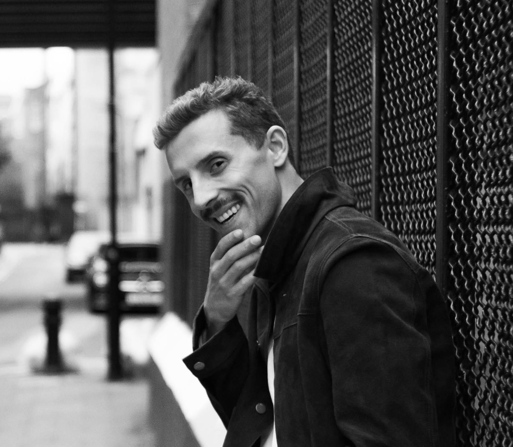

2012
Accompanied by Karl Jenkins
Sang in Jenkins's Mass for Peace, including the Ave Verum duet, with the composer himself at the piano.
Trained at the Royal Welsh College of Music & Drama and the Hochschule für Musik und Theater Leipzig, Joseph has sung from St Peter's Basilica to Carnegie Hall. He now performs at weddings, conferences and private events across the UK, Europe and further afield.

“Irresistible in the bike-on role of the Western Union Boy.”The Arts Desk ★★★★ · Britten's Paul Bunyan, Welsh National Youth Opera

A Swansea-born baritone with a warm, communicative voice and a career that has run from cathedral choir stalls to the artist side of the opera world.
He began as a treble in the choir of All Saints Church, Oystermouth, and became a founder member and regular soloist of the Ariosa Singers under Penny Ryan OBE, touring to Dublin, Prague, Paris, Barcelona, Florence, Venice and Rome. He went on to the Royal Welsh College of Music & Drama, graduating with a BMus in Vocal Performance, and spent an Erasmus semester at the Hochschule für Musik und Theater “Felix Mendelssohn Bartholdy” in Leipzig with Prof. Roland Schubert.
His Western Union Boy in Welsh National Youth Opera's Paul Bunyan at the Wales Millennium Centre, alongside the recorded voice of Stephen Fry and 150 singers from Only Boys Aloud, drew notices in The Arts Desk and Wales Arts Review.
Alongside performing, he has worked in artist management at IMG Artists in New York and in casting at Welsh National Opera. That gives him an unusual view of both sides of the stage, which he now brings to his own performing and to the singers he advises.
Solo, oratorio, opera and choral work in cathedrals, concert halls and palaces across Europe, the US and Australia.
Sang in Jenkins's Mass for Peace, including the Ave Verum duet, with the composer himself at the piano.
Performed at a St David's Day concert attended by the then Prince of Wales.
Chosen to represent the Royal Welsh College in the Kathleen Ferrier Young Singers Bursary in Blackburn.
With the RWCMD chorus at St David's Hall for the First World War centenary, alongside Simon Keenlyside.
Concerts across eastern Germany during his Erasmus semester, including Rheinsberg Palace.
Third-year recital with harpist Meg Morris: Mozart, Schubert, Wolf, Hahn, Finzi, Barber and Bernstein.
Reviews of Welsh National Youth Opera's Paul Bunyan at the Wales Millennium Centre, and of earlier stage work in Wales.
“[Joseph James] is irresistible in the bike-on role of the Western Union Boy with his life-changing telegrams, delivered in a kind of fractured Al Bowlly style.”
“[Joseph James] as the Western Union Boy had an exceptional turn-on-a-bicycle.”
“The young singers were a joy to hear and to behold, showing great levels of commitment and vitality with some wonderful acting and neatly-judged humour.”
“There are accomplished performances too from Dave Smith, Mark James, Tom Crowther, Linsey Passmore, [Joseph James] and Jack Roberts.”
“My favourite part was watching the George on the scooter.”


These productions were reviewed under the name Joseph Gorvett. Quotations are reproduced as published; the name in square brackets replaces the credit as it originally appeared.
Opera and operetta from Mozart to Britten, oratorio from Handel to Mahler, and a conservatoire training in Cardiff and Leipzig.
| Role | Work | Company |
|---|---|---|
| Western Union Boy | Britten, Paul Bunyan | Welsh National Youth Opera |
| Le Dancaïre | Bizet, Carmen | Opera'r Ddraig |
| Aecus | Offenbach, Orpheus in the Underworld | Opera'r Ddraig |
| First Priest | Mozart, The Magic Flute | RWCMD |
| George | Dr Ferret's Bad Medicine Roadshow | RWCMD |
| Don Giovanni, Leporello, Masetto | Mozart, Don Giovanni (scenes) | RWCMD |
| Maximilian | Bernstein, Candide (scenes) | Opera'r Ddraig |
| Frank Maurrant | Weill, Street Scene (scenes) | Opera'r Ddraig |
| Lockit | Gay & Pepusch, The Beggar's Opera (scenes) | RWCMD |
| Chorus | Mozart, The Marriage of Figaro | RWCMD |
Guest soloist with Welsh male voice choirs including the Morriston Orpheus and Dunvant. Member of the harp-and-voices trio The Hiraeth Ensemble.
Live classical singing for ceremonies, receptions, conferences and private occasions, with programmes built around your day. Available across the UK and Europe, and for international bookings.

A voice for the moments people remember: the walk down the aisle, the signing, the toast.

A short, polished set that changes the energy in a room, planned around your running order.

Career planning for singers and performers, drawing on artist management at IMG Artists, casting at WNO and brand strategy.
“The voice has an attractive timbre and his communication skills are very good. He connects with any audience.”
“An exemplary student… very driven and focused, determined to carve out a successful and satisfying career.”
“He will work tirelessly for his artists… empathetic to the artist's unique and often complex needs.”
Share a few details and your enquiry is drafted as an email, ready to send. Most enquiries get a reply within two working days.
Arias, roles, art song and oratorio Joseph has performed, with composers' dates. Wedding and event programmes are built to order, so ask about anything you don't see here.
Have a piece in mind for your ceremony or event?
Ask about a piece